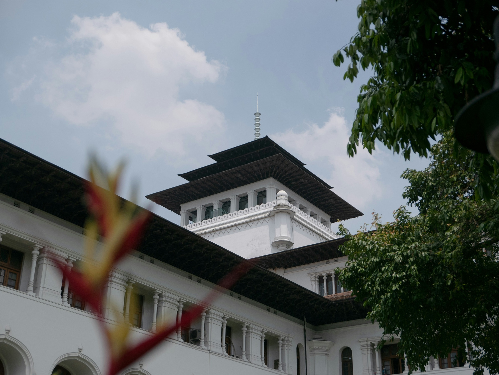

Apa yang sampai kepada kita
Sistem rekomendasi menyaring informasi. Apa yang ditonjolkan, apa yang luput, dan bagaimana pengaruhnya terhadap pemahaman publik?
Mengenal Cakra Nala
Institut Cakra Nala adalah pusat kajian ketahanan kognitif dan etika algoritma. Kami menelaah bagaimana algoritma membentuk informasi, memengaruhi keputusan, dan mengubah cara masyarakat menjalani kehidupan.
Fokus kami adalah memperkuat nalar dan tanggung jawab manusia di tengah dunia yang semakin diperantarai teknologi.
Jelajahi fokus kamiAlgoritma dalam keseharian
Dari linimasa berita hingga layanan digital, algoritma ikut menentukan apa yang warga lihat dan pilih. Kami mengkaji konsekuensinya bagi masyarakat.
Bias · Konteks · Etika
Sistem rekomendasi menyaring informasi. Apa yang ditonjolkan, apa yang luput, dan bagaimana pengaruhnya terhadap pemahaman publik?
Sistem otomatis dapat memengaruhi akses dan kesempatan. Kami menelaah bias, transparansi, dan tanggung jawab manusia di baliknya.
Ketahanan kognitif membantu warga menilai informasi, menguji asumsi, dan mengambil keputusan dengan sadar.
Yang kami yakini
Nalar manusia tetap penting
Kami percaya kemajuan teknologi perlu disertai pertimbangan etis. Efisiensi saja tidak cukup: keputusan juga perlu dapat dipahami, terbuka untuk diuji, dan memperhitungkan konsekuensinya bagi manusia.
Cara kami melihat
Pendekatan kami mempertemukan etika algoritma dengan ketahanan kognitif. Kami melihat teknologi melalui informasi yang disajikan, perilaku yang dipengaruhi, dan konteks sosial tempat ia bekerja.
Menguji asumsi, bias, dan kepentingan di balik rekomendasi serta keputusan otomatis.
Mengembangkan kemampuan memilah bukti, mengenali manipulasi, dan tetap jernih di bawah tekanan.


Tiga fokus yang saling terhubung

01 / TEKNOLOGI & MASYARAKAT
Menelaah bagaimana algoritma membentuk informasi, keputusan, dan kepercayaan, dengan manusia sebagai titik berangkat.

02 / MANUSIA & INFORMASI
Membangun kemampuan untuk tetap fokus, adaptif, dan jernih di tengah tekanan serta distorsi informasi.

03 / KOTA & KEPUTUSAN
Menghubungkan bukti, konteks sosial, dan pemikiran jangka panjang untuk memahami pilihan yang ada.
Kontribusi yang kami tuju
Kami mengarah pada keputusan yang lebih akuntabel, institusi yang lebih siap menghadapi distorsi informasi, dan masyarakat yang tetap kritis terhadap pengaruh teknologi.
Certified Strategist Cognitive Resilience
Diperoleh melalui evaluasi kompetensi dan pemenuhan standar kelulusan.
Institut Cakra Nala